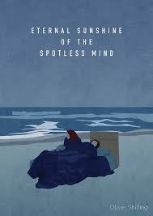
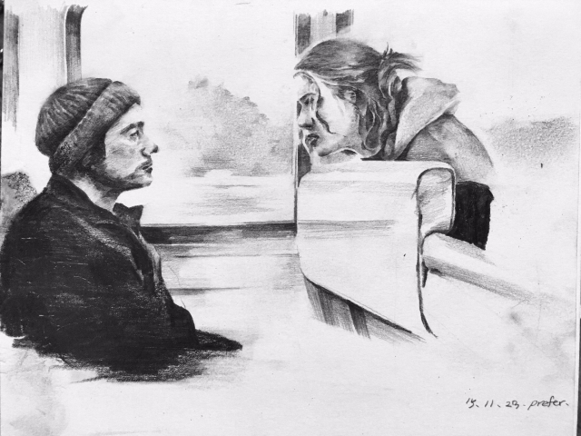
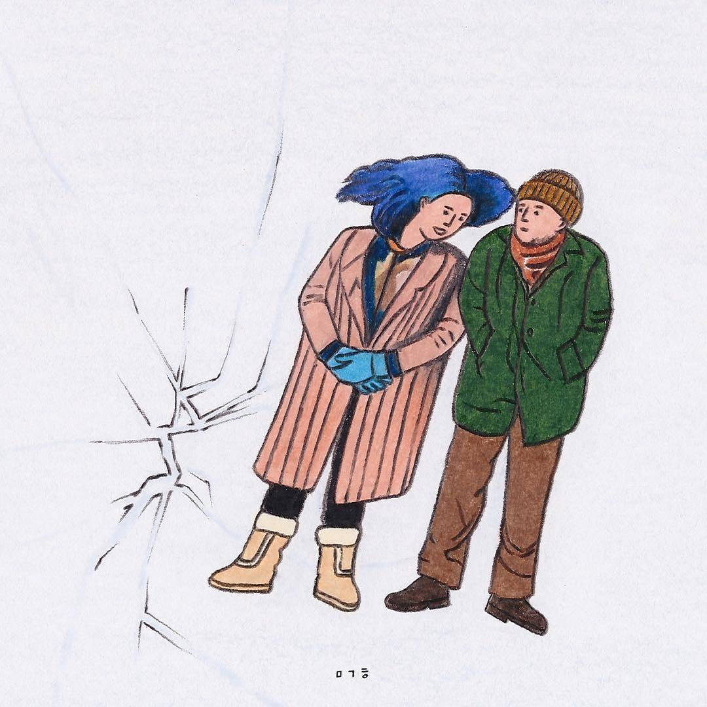

Fanburster
Home
Artwork
Blog
Info
about
ETERNAL SUNSHUNE
OF THE SPOTLESS MIND

이별의 고통을 느껴본 사람이라면 누구나, 옛 연인에 대한 기억을 지우고 싶다는 생각을 해보았을 겁니다. 하지만 어느새 '그렇게 끔찍하지만은 않았어'라는 생각이 들진 않았나요?
사랑에 빠질 때의 설렘, 속삭였던 달콤한 단어들, 눈과 입이 맞닿던 순간들이 떠오르진 않았나요?
귀여운 상상력의 미셸 공드리가 전하는 운명처럼 반복되는 사랑과 이별의 이야기 [이터널 선샤인]입니다.
selection


all
more